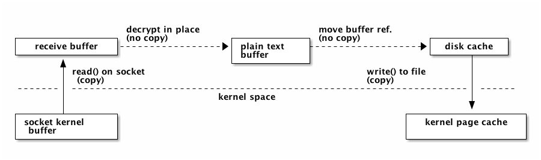

libtorrent manual
| Author: | Arvid Norberg, arvid@rasterbar.com |
|---|---|
| Version: | 0.15.0 |
Table of contents
introduction
libtorrent is a feature complete C++ bittorrent implementation focusing on efficiency and scalability. It runs on embedded devices as well as desktops. It boasts a well documented library interface that is easy to use. It comes with a simple bittorrent client demonstrating the use of the library.
features
libtorrent is under active development. It is an ongoing project. Its current state supports and includes the following features:
extensions
- plugin interface for implementing custom bittorrent extensions without having to modify libtorrent
- supports trackerless torrents (using the Mainline kademlia DHT protocol) with some DHT extensions. BEP 5.
- supports the bittorrent extension protocol. See extensions. BEP 10.
- supports the uTorrent metadata transfer protocol (i.e. magnet links).
- supports the uTorrent peer exchange protocol (PEX).
- supports local peer discovery (multicasts for peers on the same local network)
- multitracker extension support (supports both strict BEP 12 and the uTorrent interpretation).
- tracker scrapes
- supports lt_trackers extension, to exchange trackers between peers
- HTTP seeding, as specified in BEP 17 and BEP 19.
- supports the udp-tracker protocol. (BEP 15).
- supports the no_peer_id=1 extension that will ease the load off trackers.
- supports the compact=1 tracker parameter.
- super seeding/initial seeding (BEP 16).
- private torrents (BEP 27).
- support for IPv6, including BEP 7 and BEP 24.
disk management
- uses a separate disk I/O thread to not have the disk ever block on network or client interaction. (see threads).
- supports files > 2 gigabytes.
- fast resume support, a way to get rid of the costly piece check at the start of a resumed torrent. Saves the storage state, piece_picker state as well as all local peers in a separate fast-resume file.
- has an adjustable read and write disk cache for improved disk throughput.
- queues torrents for file check, instead of checking all of them in parallel.
- does not have any requirements on the piece order in a torrent that it resumes. This means it can resume a torrent downloaded by any client.
- supports both sparse files and compact file allocation (where pieces are kept consolidated on disk)
- seed mode, where the files on disk are assumed to be complete, and each piece's hash is verified the first time it is requested.
network
- adjusts the length of the request queue depending on download rate.
- serves multiple torrents on a single port and in a single thread
- piece picking on block-level (as opposed to piece-level). This means it can download parts of the same piece from different peers. It will also prefer to download whole pieces from single peers if the download speed is high enough from that particular peer.
- supports http proxies and basic proxy authentication
- supports gzipped tracker-responses
- can limit the upload and download bandwidth usage and the maximum number of unchoked peers
- implements fair trade. User settable trade-ratio, must at least be 1:1, but one can choose to trade 1 for 2 or any other ratio that isn't unfair to the other party.
- possibility to limit the number of connections.
- delays have messages if there's no other outgoing traffic to the peer, and doesn't send have messages to peers that already has the piece. This saves bandwidth.
- selective downloading. The ability to select which parts of a torrent you want to download.
- ip filter to disallow ip addresses and ip ranges from connecting and being connected
- NAT-PMP and UPnP support (automatic port mapping on routers that supports it)
highlighted features
disk caching
All disk I/O in libtorrent is done asynchronously to the network thread, by the disk io thread. When a block is read, the disk io thread reads all subsequent blocks from that piece into the read cache, assuming that the peer requesting the block will also request more blocks from the same piece. This decreases the number of syscalls for reading data. It also decreases delay from seeking.
Similarly, for write requests, blocks are cached and flushed to disk once one full piece is complete or the piece is the least recently updated one when more cache space is needed. The cache dynamically allocates space between the write and read cache. The write cache is strictly prioritized over the read cache.
The cache blocks that are in used, are locked into physical memory to avoid it being paged out to disk. Allowing the disk cache to be paged out to disk means that it would become extremely inefficient to flush it, since it would have to be read back into physical memory only to be flushed back out to disk again.
In order to conserve memory, and system calls, iovec file operations are used to flush multiple cache blocks in a single call.
On low-memory systems, the disk cache can be disabled altogether or set to smaller limit, to save memory.
network buffers
On CPUs with small L2 caches, copying memory can be expensive operations. It is important to keep copying to a minimum on such machines. This mostly applies to embedded systems.
In order to minimize the number of times received data is copied, the receive buffer for payload data is received directly into a page aligned disk buffer. If the connection is encrypted, the buffer is decrypted in-place. The buffer is then moved into the disk cache without being copied. Once all the blocks for a piece have been received, or the cache needs to be flushed, all the blocks are passed directly to writev() to flush them in a single syscall. This means a single copy into user space memory, and a single copy back into kernel memory, as illustrated by this figure:
When seeding and uploading in general, unnecessary copying is avoided by caching blocks in aligned buffers, that are copied once into the peer's send buffer. The peer's send buffer is not guaranteed to be aligned, even though it is most of the time. The send buffer is then encrypted with the peer specific key and chained onto the iovec for sending. This means there is one user space copy in order to allow unaligned peer requests and peer-specific encryption. This is illustrated by the following figure:

piece picker
The piece picker is a central component in a bittorrent implementation. The piece picker in libtorrent is optimized for quickly finding the rarest pieces. It keeps a list of all available pieces sorted by rarity, and pieces with the same rarity, shuffled. The rarest first mode is the dominant piece picker mode. Other modes are supported as well, and used by peers in specific situations.
The piece picker allows to combine the availability of a piece with a priority. Together they determine the sort order of the piece list. Pieces with priority 0 will never be picked, which is used for the selective download feature.
In order to have as few partially finished pieces as possible, peers have an affinity towards picking blocks from the same pieces as other peers in the same speed category. The speed category is a coarse categorization of peers based on their download rate. This makes slow peers pick blocks from the same piece, and fast peers pick from the same piece, and hence decreasing the likelihood of slow peers blocking the completion of pieces.
The piece picker can also be set to download pieces in sequential order.
portability
libtorrent runs on most major operating systems, including Windows, MacOS X, Linux, BSD and Solaris. It uses Boost.Thread, Boost.Filesystem, Boost.Date_time and various other boost libraries as well as zlib (shipped) and asio (shipped). At least version 1.34.1 of boost is required.
libtorrent uses asio, hence it will take full advantage of high performance network APIs on the most popular platforms. I/O completion ports on windows, epoll on linux and kqueue on MacOS X and BSD.
libtorrent has been successfully compiled and tested on:
- Windows 2000, XP and Vista vc7.1, vc8
- Linux x86 GCC 3.3, GCC 3.4.2, 4.x
- Linux PPC GCC 4.1.1
- MacOS X (darwin), (Apple's) GCC 3.3, (Apple's) GCC 4.0
- SunOS 5.8 GCC 3.1 and Sunpro
- Cygwin GCC 3.3.3
Fails on:
- GCC 2.95.4
- msvc6